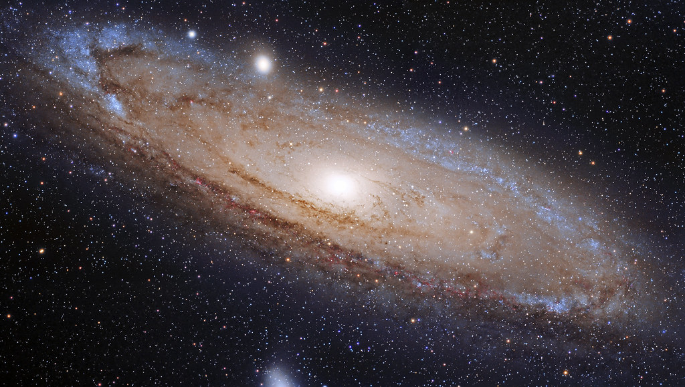
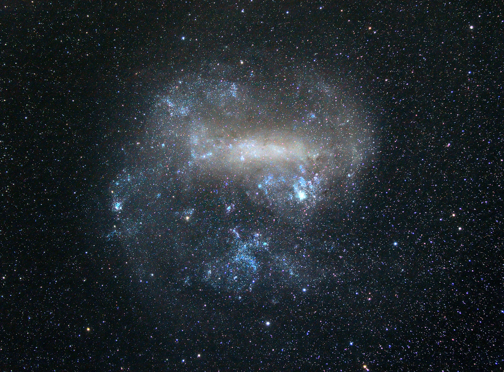
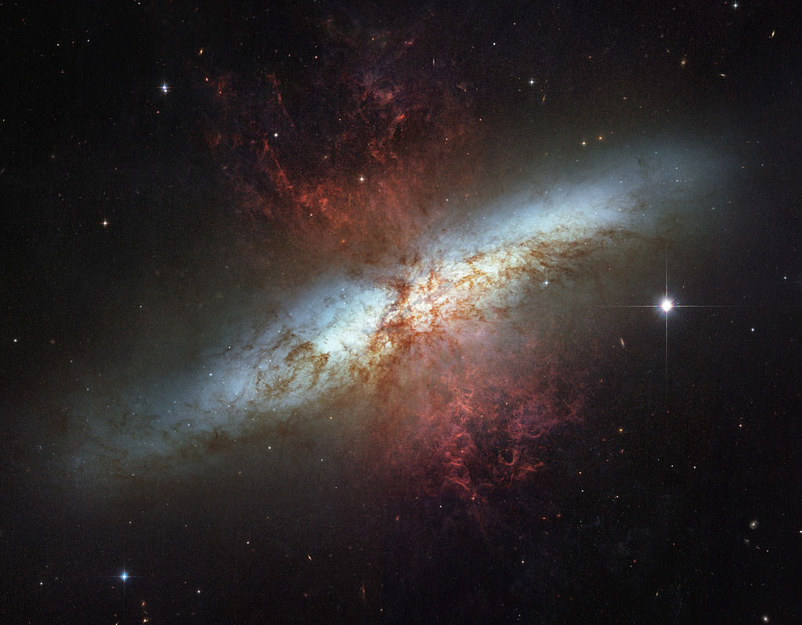

The Space Project
What are inside space?
Most of the universe is empty space, called a vacuum, but it is an imperfect vacuum. There are clouds of interstellar dust and the tiny particles that make up the solar wind. There are many isolated particles and hydrogen atoms, which sometimes form clouds over a billion kilometers wide called "nebulae." Besides nebulae and interstellar dust, there are also bits of rubble as big as small moons to as small as grains of sand. These bits of rubble are called planetoids and asteroids. Radio, heat, and x-rays all echo through space, as do beams of light. There is radiation bursting forth in solar flares.
Galaxies
No one is sure exactly how many galaxies there are in total—many millions for sure! To illustrate how many galaxies there are that are known, a single 2 year survey (the 2dF Galaxy Survey) which finished in 2003 surveyed 250,000 galaxies in order to make a 3D map of the Universe. And that's certainly not all known galaxies! Check out the 2dF website for more on this. As another example, there are 932 million objects in the 15th data release of the Sloan Digital Sky Survey (SDSS), although many of those are stars, and SDSS has specta for about 2.5 milion galaxies. There are about 667 million distinct known galaxies in the NASA Extragalactic Database (NED)! And ~2 million sources which still need to be analyzed to determine if they're new objects or just new measurements of known old objects. This is still probably not everything either. When a new telescope comes online that has a significant upgrade in observing power compared to what was available before, Astronomers will generally do a big survey to find new galaxies, and it takes time for these new galaxy catalogs to be merged with big databases like NED. So the exact number of known galaxies is constantly changing! For the observable Universe, it is estimated that there are as many as 200 billion galaxies, but we aren't able to see all of them as our telescopes are not sensitive enough. In addition, different types of telescopes are better at finding different types of galaxies. For example, many very distant galaxies (galaxies early in cosmic history) are very dusty, and dust blocks the optical starlight. Therefore optical telescopes like Hubble won't see these dusty galaxies. However, that dust gets hot from absorbing the starlight and then emits light in the infrared, which can be detected with infrared telescopes like Herschel. Collating these different galaxy surveys together can be challenging and affects estimates about the number of galaxies in the Universe.
Few Known Galaxies
milky way

The Milky Way is the galaxy that contains our Solar System, with the name describing the galaxy's appearance from Earth: a hazy band of light seen in the night sky formed from stars that cannot be individually distinguished by the naked eye. The term Milky Way is a translation of the Latin via lactea, from the Greek γαλαξίας κύκλος (galaxías kýklos, "milky circle").
andromeda
The Andromeda Galaxy (IPA: /ænˈdrɒmɪdə/), also known as Messier 31, M31, or NGC 224 and originally the Andromeda Nebula (see below), is a spiral galaxy approximately 780 kiloparsecs (2.5 million light-years) from Earth, and the nearest major galaxy to the Milky Way.[4] The galaxy's name stems from the area of the Earth's sky in which it appears, the constellation of Andromeda.
large magellanic cloud
The Large Magellanic Cloud (LMC) is a satellite galaxy of the Milky Way.At a distance of about 50 kiloparsecs (≈163,000 light-years),the LMC is the second- or third-closest galaxy to the Milky Way, after the Sagittarius Dwarf Spheroidal (~16 kpc) and the possible dwarf irregular galaxy known as the Canis Major Overdensity. Based on readily visible stars and a mass of approximately 10 billion solar masses, the diameter of the LMC is about 14,000 light-years (4.3 kpc), making it roughly one one-hundredth as massive as the Milky Way.
Messier 82
Messier 82 (also known as NGC 3034, Cigar Galaxy or M82) is a starburst galaxy approximately 12 million light-years away in the constellation Ursa Major. A member of the M81 Group, it is about five times more luminous than the whole Milky Way and has a center one hundred times more luminous than our galaxy's center.The starburst activity is thought to have been triggered by interaction with neighboring galaxy M81. As the closest starburst galaxy to Earth, M82 is the prototypical example of this galaxy type.
Solar System
The Solar System is the gravitationally bound system of the Sun and the objects that orbit it, either directly or indirectly.Of the objects that orbit the Sun directly, the largest are the eight planets,with the remainder being smaller objects, such as the five dwarf planets and small Solar System bodies. Of the objects that orbit the Sun indirectly—the moons—two are larger than the smallest planet, Mercury. The Solar System formed 4.6 billion years ago from the gravitational collapse of a giant interstellar molecular cloud. The vast majority of the system's mass is in the Sun, with the majority of the remaining mass contained in Jupiter. The four smaller inner planets, Mercury, Venus, Earth and Mars, are terrestrial planets, being primarily composed of rock and metal. The four outer planets are giant planets, being substantially more massive than the terrestrials. The two largest, Jupiter and Saturn, are gas giants, being composed mainly of hydrogen and helium; the two outermost planets, Uranus and Neptune, are ice giants, being composed mostly of substances with relatively high melting points compared with hydrogen and helium, called volatiles, such as water, ammonia and methane. All eight planets have almost circular orbits that lie within a nearly flat disc called the ecliptic.
Planets

Mercury

Venus
Earth

Mars
Jupiter

Saturn

Neptune